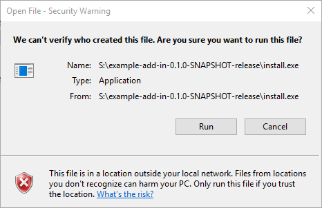
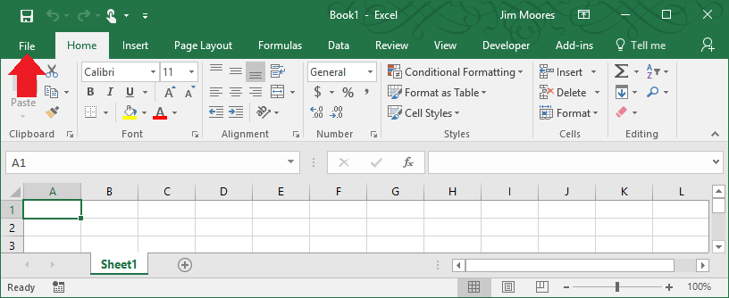
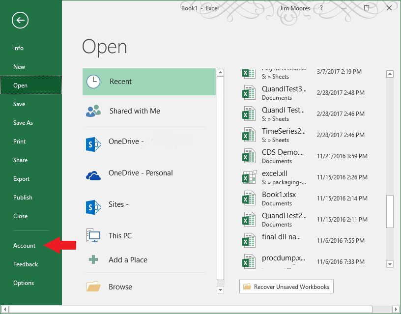
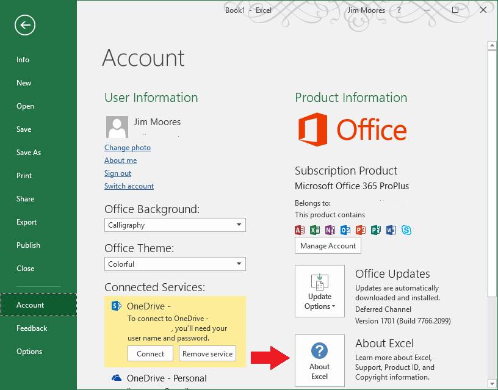
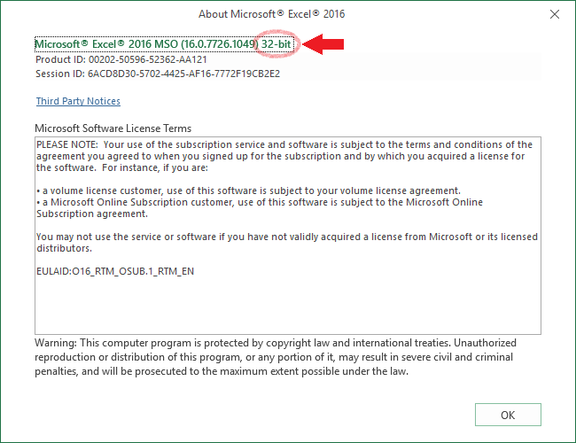
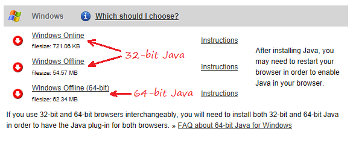

Installation Instructions
There are two ways to install this add-in:
To use the installer, first make sure you've unzipped the download in the directory you want the add-in to be installed in. Do not run the installer directly inside the ZIP file.
Simply double-click the setup.exe file. If you're running from a network drive or you're using an unsigned build, you may see a warning

If you see this, click to run the installer.
The installer will...
The installer will only work with this example and is not included under the same license as the rest of XL4J. If you want an automatic installer for your own add-ins, you'll need to buy a commerical license.
To install this add-in manually you can either run the add-in one-off, in which case it won't open each time you run Excel, or by using the Excel add-in manager to install the add-in so it runs each time you run Excel.
Firstly you need to determine if you have 32-bit or 64-bit office installed. If you don't know, you probably have the 32-bit version installed, but if you want to check, you can find out by:




You must have a (free) Java Runtime Environment installed. This can be downloaded from:
It is important that you choose the correct version. If you're using a 32-bit version of office, install the 32-bit JRE (they're often not labelled as 32-bit so just look for the downloads that are not labelled 64-bit).

How to choose the correct download on the java download page (Source: java.com)
The XLL file can be found in:
bin-x86\excel.xll | if you're using a 32-bit Excel |
bin-x64\excel.xll | if you're using a 64-bit Excel |
Again, if you don't know if your version of Excel is 32-bit or 64-bit, it's probably 32-bit.
You can just double-click on these XLL files to run the add-in for just one session, but usually you'd want to make it so that the add-in would be available every time you start Excel. To do that you need to open the Excel add-in manager:
At the bottom, you will see:
Click the button
excel.xll file (see above), and choose
.You should now be able to use XL4J. To check it's loaded try using one of
the example sheets or just test the MyAdd function by putting:
=MyAdd(1,2)
in any cell. If you see 3, the Add-in has loaded correctly. If you see
#NAME, then see the troubleshooting section.
See the user guide for information about how to use the add-in.
Things to check if you have problems installing:
If when you add the add-in, you get a pop-up dialog box that says:
you are probably trying to load/run the add-in from within a zip archive. Make sure you unzip the download by right-clicking and choosing "Extract All..." in Windows File Explorer.
Occasionally a bug in Excel can lead to it getting confused about old add-ins. This step should only be done after consulting with your local administrator.
First, make sure you close down Excel completely. Then you need to open the registry editor (regedit.exe): search for it via the start menu if you're not familiar. Once it's open, find the key (which look like folders) under:
HKEY_CURRENT_USER\SOFTWARE\Microsoft\Office\<internal version number>\Excel
where <internal version number> is:
| <internal version number> | Public version |
|---|---|
| 16.0 | Excel 2016 |
| 15.0 | Excel 2013 |
| 14.0 | Excel 2010 |
then look under the 'Add-in Manager' key and you will see the installed add-ins. If any entries end with excel.xll (you might need to make the 'Name' column wider to see the end), you should remove them by right-clicking and choosing 'Delete'.
Also check the 'Options' key and if there's a key called 'OPEN' (or it might be called 'OPEN1', 'OPEN2', etc...) whose value refers to excel.xll (again, you might need to make the Data column wider to be able to see) you should delete it too, again by right clicking and choosing 'Delete'.
You should then restart Excel and try the installation procedure again.